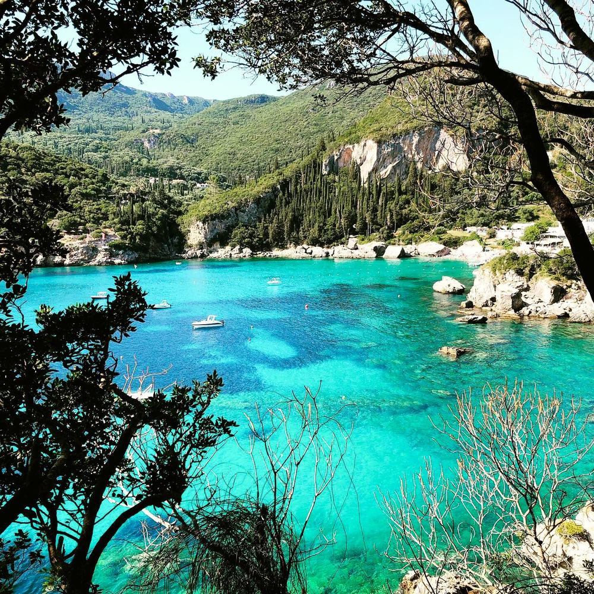
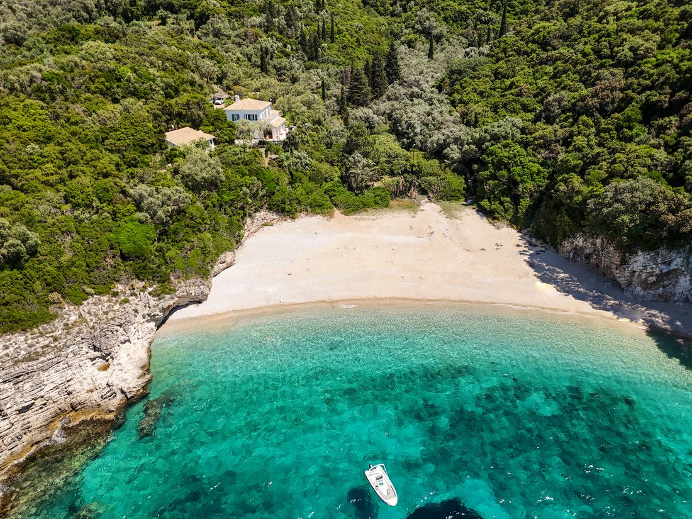
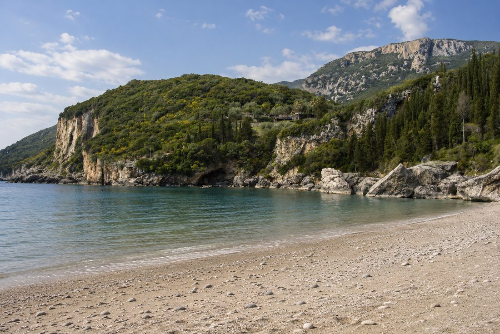
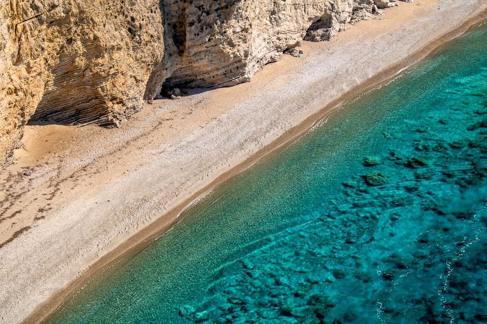
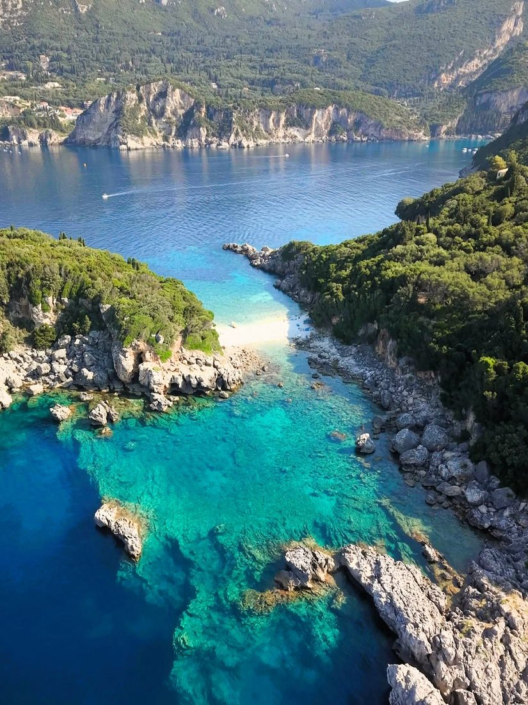
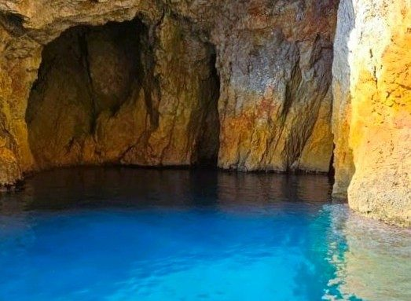
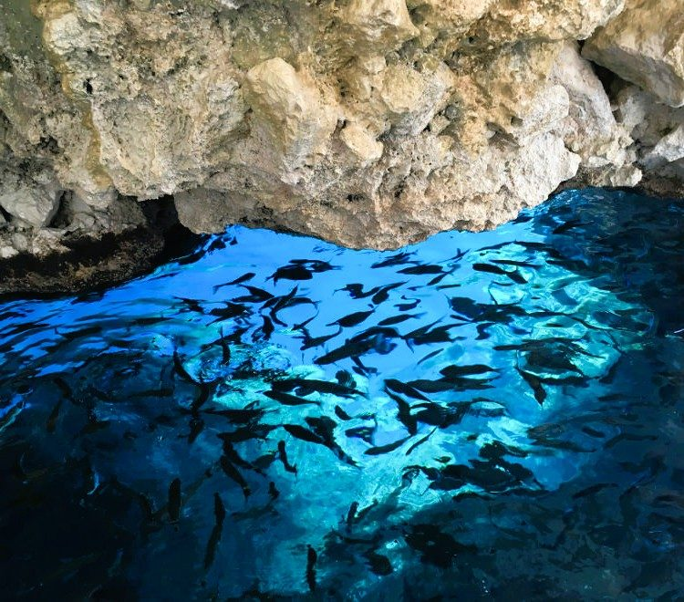
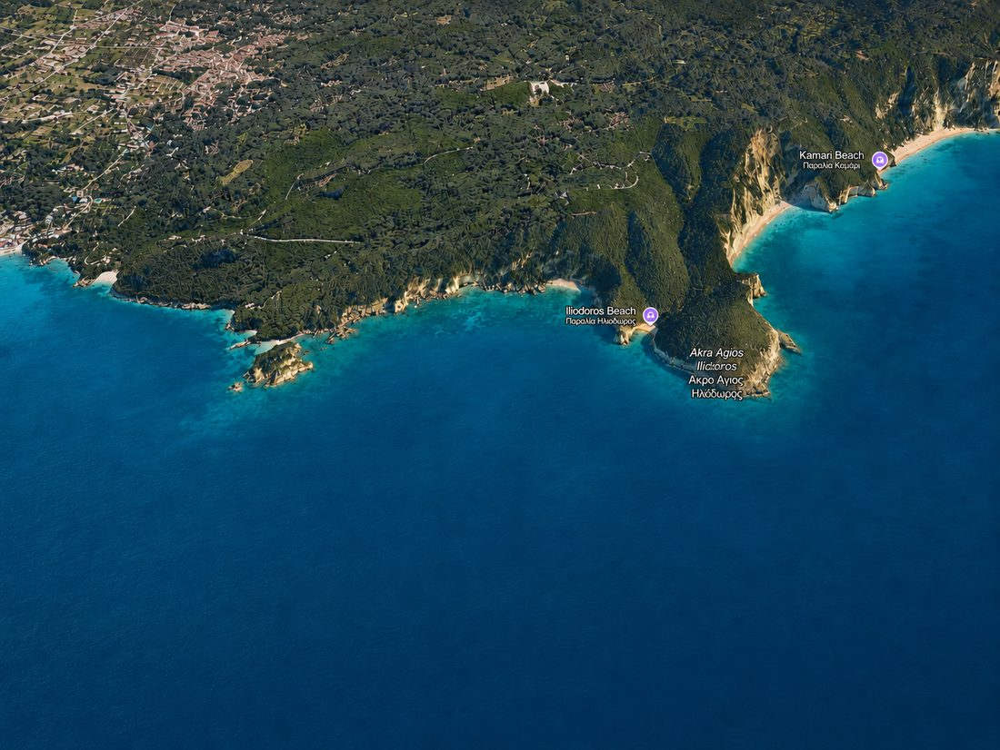

The Coastline

Fourteen beaches, four sea caves and one of Corfu's richest coastlines.
The coast around Liapades folds into small bays, hidden coves, sea caves and steep green cliffs.
Some beaches are reached on foot. Others reveal themselves from the water.
Rovinia has its own cave accessible from land, while other caves are found along the coast and by the sea.
The beaches are remarkably different from one another. One may be pebbly with deep turquoise water, another sandy with a pale blue sea. Some are edged by large rocks, some surrounded by dense greenery, while others sit beneath sheer rock faces that look almost vertically.
The coastline changes character from one beach to the next.
Our Beaches

Rovinia Beach

Gefyra Beach

Chomi Beach

Limni Beach

Sea Cave

Blue Eye Cave
Explore the coastline
Take a tilted, rotatable 3D flyover of the Liapades coastline in Google Earth.
